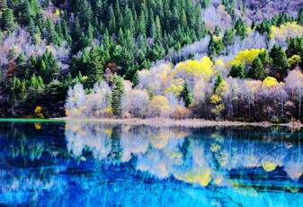

Overview
Purpose
I am Jade, a rising senior at BYUI University and a marketing major. I am doing the promotion of tourist attractions,hoping to expand the audience through social media. Let more people experience the natural scenery and realize the importance of environmental protection.
Audience
1. Young people in urban areas, aged 20-30, like to go out on weekends, organize friends to have outdoor barbecues, campfire activities, fishing, and outings. (This part of tourists has strong spending power)
2. Surrounding residents, aged 20-60, like to watch the excitement, play mahjong, drink tea, play cards, etc. (weak spending power)
3. For parent-child families, both parents are middle-class. In spring, they take their children out for outings, fly kites, and sit on moisture-proof mats on the river bank for leisure. (Focus on parent-child consumption)
4. Urban white-collar workers like places with tonality and quality. They like to listen to the wind on the river bank and live in B&Bs. (Extreme consumption, high quality requirements)
5. Company or large tourist group.
Branding
Website Logo
Style Guide
Color Palette
Palette URL:
https://coolors.co/659157-577399-bdd5ea-f7f7ff| Primary | Secondary | Accent 1 | Accent 2 |
|---|---|---|---|
| [#f213cd3c] | [#ffffff] | [#f8f8f8] |
Typography
Heading Font: Major Mono Display
Paragraph Font: Helvetica
Colored paragraph example
Trips vary from mild and great for families, to trips exclusively for physically fit and experienced climber. No matter what type of natural adventures you are seeking, We can make it. happen for you.
Navigation
Site Map
Content
Home page
We make scenic spots, and scenic spots are a selling point, but the selling point cannot be limited to scenic spots. After all, the tourism resources of scenic spots are not so unique. My selling point must be to combine local resources to make a fuss. First of all, introduce the background of the scenic spot, the historical story, and what are the components of the scenic spot. Like mountains, or water, or strange topographical features.
Images for the Home page

activities
1.Fireworks Transform thinking and turn geographical disadvantages into advantages. Our place is far away from the main city, but it is just outside the fireworks ban area in the main city. The Spring Festival is the day when fireworks are set off. Our first selling point is that this is the river bank where fireworks can be set off all year round. After confirming the theme of the fireworks display, we need to make in-depth marketing plans, such as: Japan is too far to watch the fireworks festival, so bring your family to the Mokdong Fireworks Conference. Referring to the fireworks festival in Japan, we can also make at least a preliminary version of the fireworks festival in Jiangan. And even the primary version can bring a huge shock to tourists. What about the future. Fireworks, marriage proposals, and team building activities can be integrated into this long-term selling point to play out culture, features, and romance. You can even add our traditional firecracker culture and the legend of the Nian Beast to make a parent-child study program. Travel product line. 2.Campfire party When there is no cost in the early stage, you only need to light a bonfire, build a simple stage, and make publicity in advance. There is no problem for the surrounding residents to come here. 3. Night lighting More than 200,000 yuan has been invested in the lighting project, and this wheat field lighting circle is the most popular. The photo effect is very good. 4. River beach kite, self-driving, barbecue, etc.
Images for activities


culture
To build the cultural theme of the scenic spot, it is necessary to extract a large cultural pattern and tonality, form local culture into sporadic points, and put it into this large cultural pattern to supplement it. Instead of using these sporadic cultural points, they are directly displayed to tourists (most of the domestic attractions are display points, without the entire theme). With the main line of cultural themes, it is necessary to think about how to enrich this main line.
Images for the Page 3